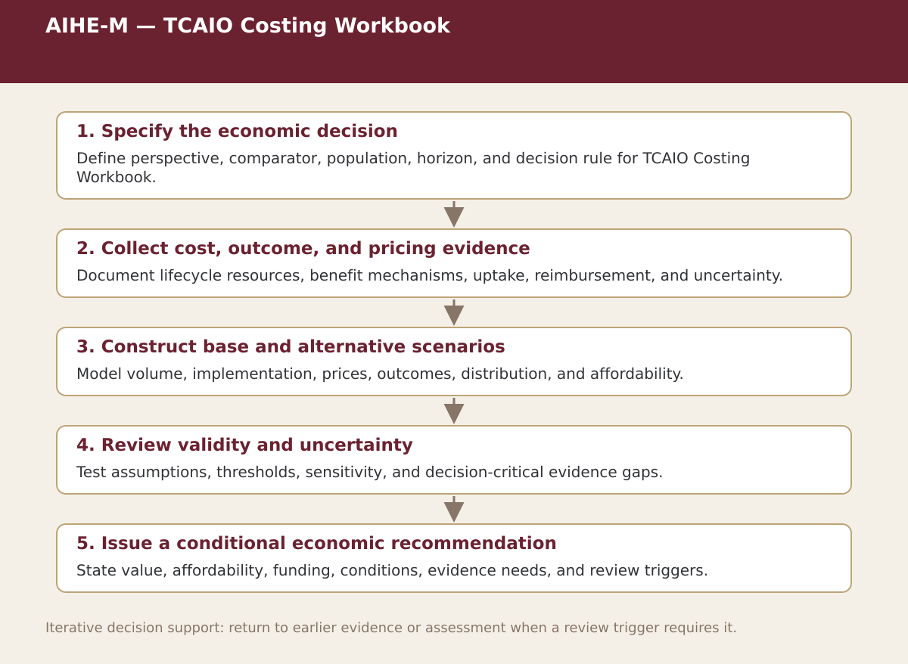

Supplemental specialist tool · Chapter 6
AIHE-M — TCAIO Costing Workbook
Estimate incremental lifecycle costs from acquisition through operation, monitoring, material change, and exit.

Process steps
| Step | Stage | Purpose | Required Input | Expected Output | Decision Or Gate |
|---|---|---|---|---|---|
| 1 | Specify the economic decision | Define perspective, comparator, population, horizon, and decision rule for TCAIO Costing Workbook. | Local evidence and the prior approved step | Versioned record for: Specify the economic decision | Proceed, revise, escalate, restrict, or stop as appropriate |
| 2 | Collect cost, outcome, and pricing evidence | Document lifecycle resources, benefit mechanisms, uptake, reimbursement, and uncertainty. | Local evidence and the prior approved step | Versioned record for: Collect cost, outcome, and pricing evidence | Proceed, revise, escalate, restrict, or stop as appropriate |
| 3 | Construct base and alternative scenarios | Model volume, implementation, prices, outcomes, distribution, and affordability. | Local evidence and the prior approved step | Versioned record for: Construct base and alternative scenarios | Proceed, revise, escalate, restrict, or stop as appropriate |
| 4 | Review validity and uncertainty | Test assumptions, thresholds, sensitivity, and decision-critical evidence gaps. | Local evidence and the prior approved step | Versioned record for: Review validity and uncertainty | Proceed, revise, escalate, restrict, or stop as appropriate |
| 5 | Issue a conditional economic recommendation | State value, affordability, funding, conditions, evidence needs, and review triggers. | Local evidence and the prior approved step | Versioned record for: Issue a conditional economic recommendation | Proceed, revise, escalate, restrict, or stop as appropriate |
Status. This process map is a navigation and decision-support aid. Adapt it to the relevant jurisdiction, institution, population, workflow, technology version, evidence cut-off, and accountable authority.